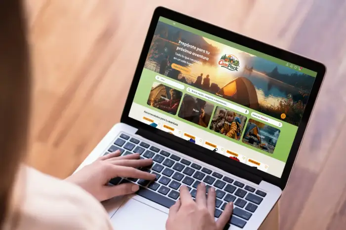
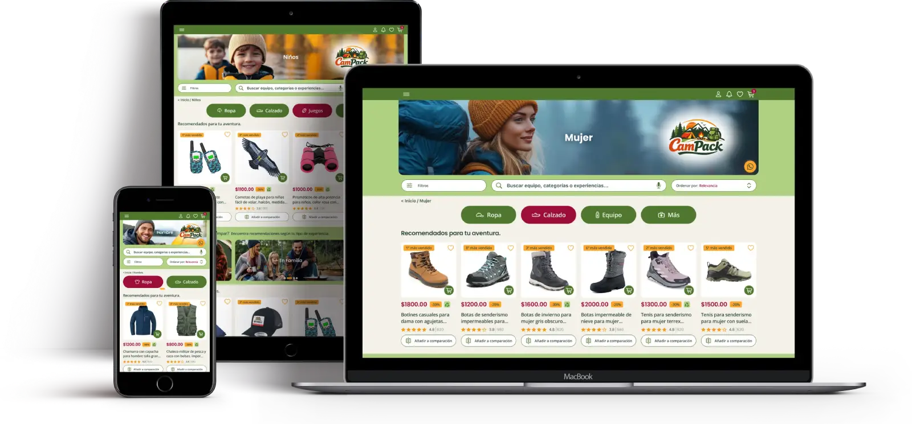
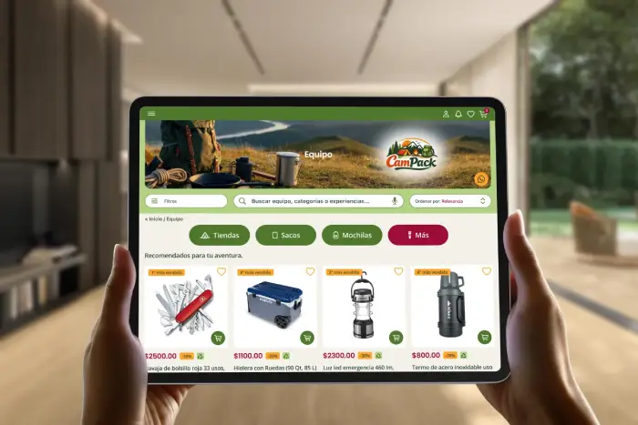
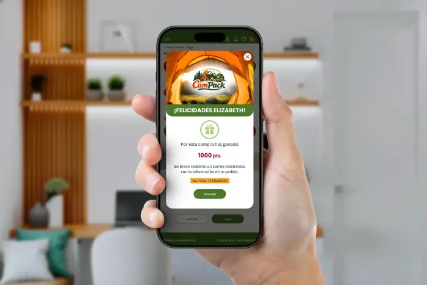
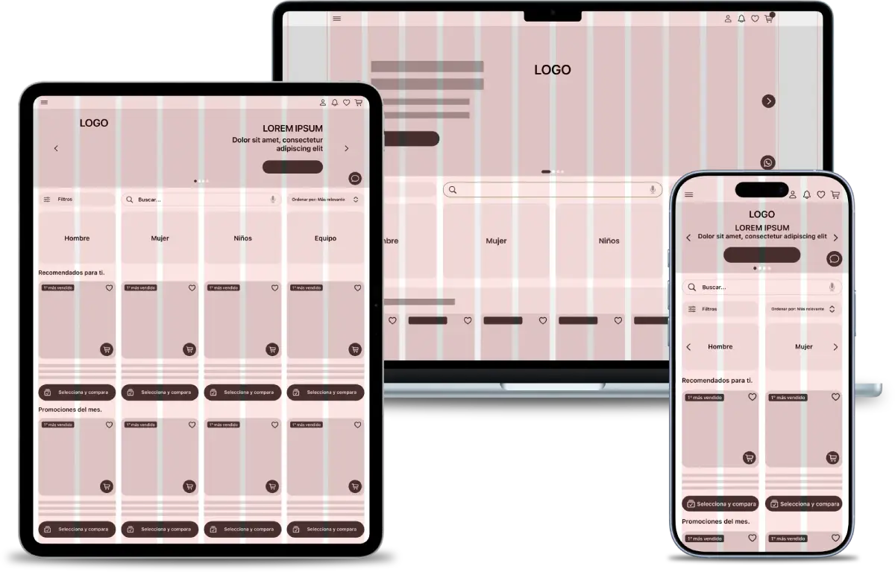
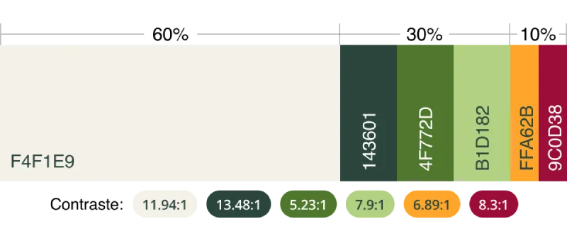
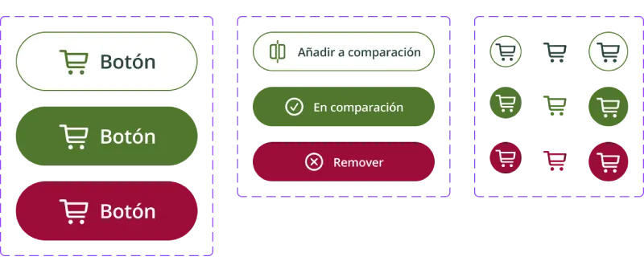
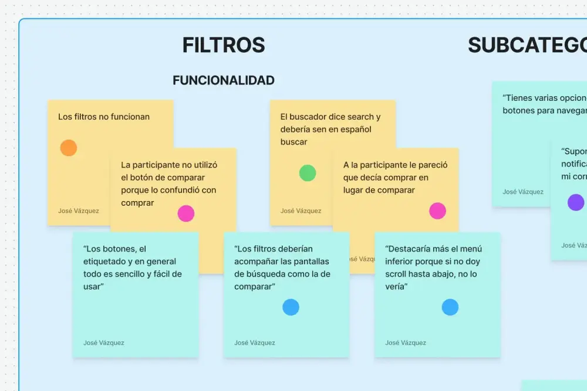
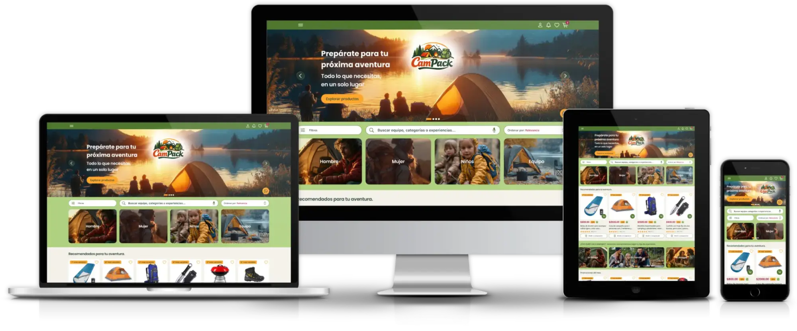

Desktop
Exploración simultánea y comparación visual para facilitar descubrimiento y evaluación de productos.
Diseño de una experiencia eCommerce responsive con enfoque en claridad, comparación de productos y consistencia multiplataforma.

Experiencia multidispositivo
La navegación y organización del contenido fueron adaptadas para funcionar de forma clara y consistente en desktop, tablet y mobile.

Exploración simultánea y comparación visual para facilitar descubrimiento y evaluación de productos.

Balance entre claridad y navegación táctil para mejorar lectura y exploración de contenido.

Acciones rápidas, filtros simplificados y navegación enfocada en claridad y velocidad.
Estrategia UX
La experiencia fue adaptada para responder a diferentes formas de navegación e interacción según el dispositivo utilizado.
En desktop se priorizó la exploración y comparación de productos. En tablet se buscó equilibrio entre claridad y navegación táctil. En mobile se simplificó la experiencia para facilitar acciones rápidas.
Mayor exploración simultánea, navegación expandida y comparación visual de productos.
Optimización táctil y reorganización de módulos para mejorar lectura y navegación.
Priorización de acciones rápidas, filtros simplificados y reducción de fricción.
Wireframes
Los wireframes ayudaron a definir la estructura, navegación y distribución del contenido antes de diseñar la interfaz final.
Se diseñó una estructura flexible para mantener claridad y consistencia entre dispositivos.
Explorar wireframes

Decisión UX
Se utilizó un menú colapsable incluso en desktop para reducir ruido visual y mantener el enfoque en búsqueda, categorías y descubrimiento de productos.
Se redujeron elementos secundarios para dar mayor prioridad a la búsqueda y exploración de productos.
Sistema visual
Se desarrolló un sistema visual adaptable para mantener coherencia, legibilidad y consistencia entre desktop, tablet y mobile.

Se definió una paleta enfocada en contraste, claridad visual y consistencia de marca.
Jerarquías tipográficas adaptables para mejorar lectura y escaneo de contenido.

Componentes reutilizables para mantener consistencia visual y escalabilidad.
Hallazgos de usabilidad
Las pruebas ayudaron a detectar problemas de navegación, organización visual y claridad en acciones importantes.
Menús competían con acciones principales.
La jerarquía visual dificultaba escaneo rápido.
Algunas acciones importantes perdían visibilidad.

Insights organizados mediante diagrama de afinidad.
Solución final
La solución final facilita la navegación, comparación y exploración de productos de forma clara y consistente entre dispositivos.
Explorar prototipos:

Resultados
La propuesta mejoró la organización de la navegación y facilitó la exploración y comparación de productos.
Flujos simplificados y navegación más intuitiva.
Mejor jerarquía visual y organización responsive.
Experiencia unificada entre desktop, tablet y mobile.
Aprendizajes
Este proyecto reforzó la importancia de adaptar la experiencia según el dispositivo y las necesidades de uso.
Reducir elementos visibles permitió mejorar claridad y enfoque en tareas principales.
Adaptar experiencias implica entender comportamiento y atención según el contexto.
Las pruebas permitieron detectar fricción temprana y refinar la experiencia.
Este proyecto fue posible gracias a las personas que participaron en las entrevistas y pruebas de usabilidad. Su retroalimentación ayudó a mejorar la experiencia en cada iteración.
Para proteger la privacidad de las personas participantes, sus nombres se presentan mediante alias.
Las ideas iniciales siempre fueron buenas, pero contar con la opinión real de quienes usarán el sitio ayuda a mejorar el resultado final. Gracias por tomar en cuenta mis comentarios.
Eliminar las etiquetas redundantes dio mayor protagonismo a las imágenes y la navegación se siente más fluida. No sabría decir exactamente qué cambió, pero ahora es más sencilla de recorrer.